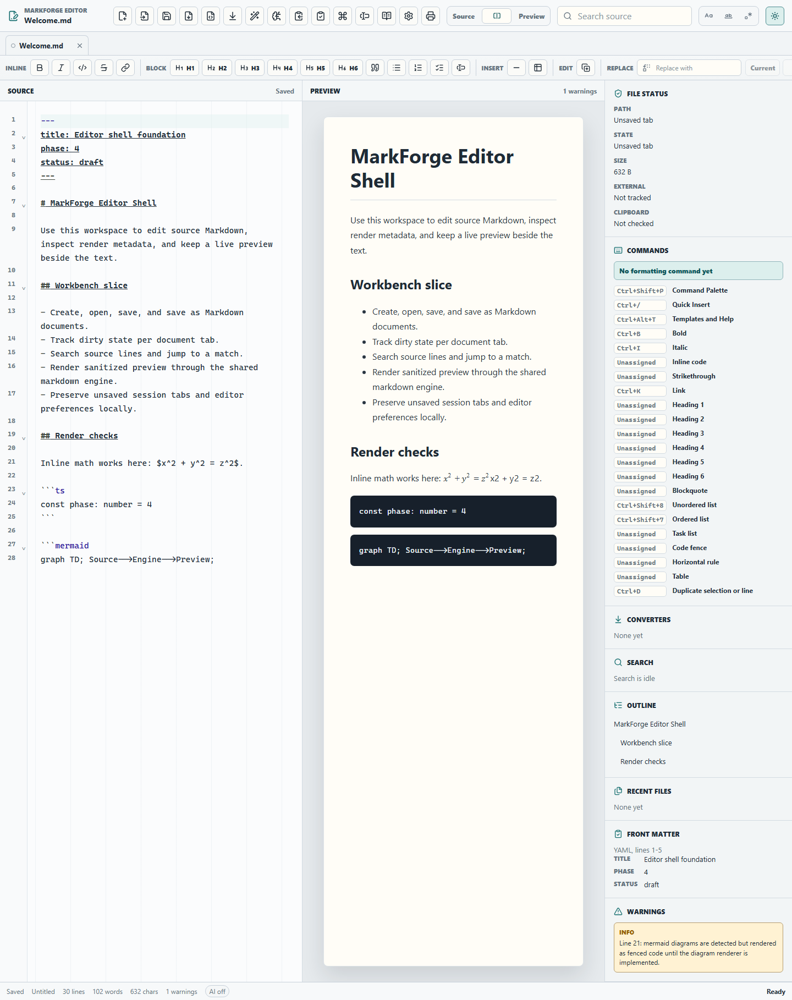
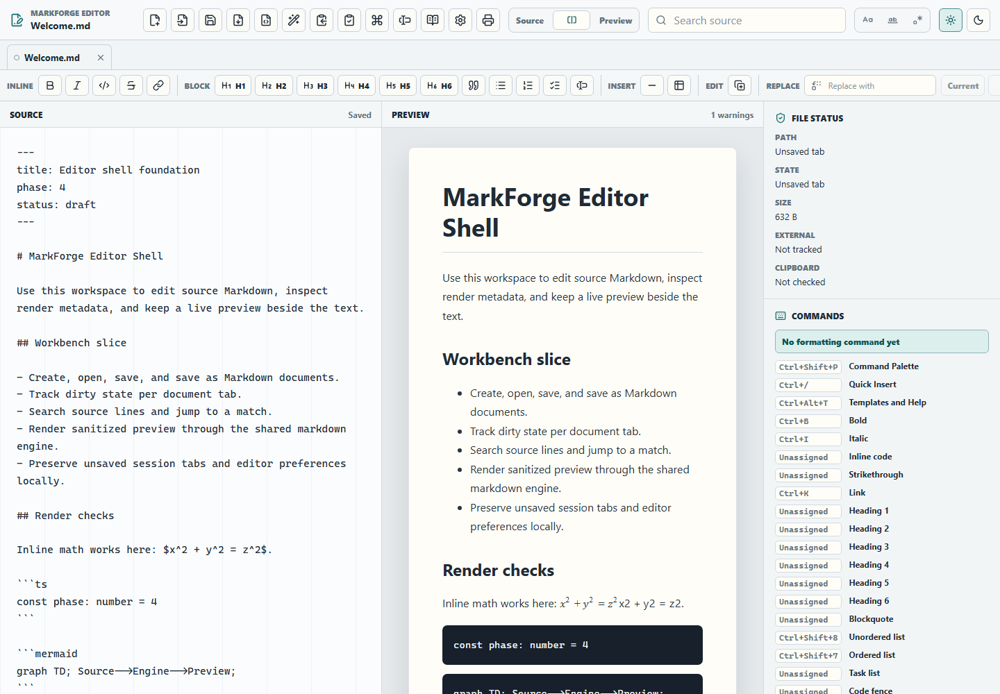

Source and rich editing
CodeMirror 6 backs source mode, while ProseMirror powers a Markdown-backed rich mode. Commands, templates, converters, Local AI insertion, search, dirty state, and preview workflows remain wired.
Repository-grounded static docs
MarkForge is being built as a professional, local-first Markdown editor and standalone Markdown viewer for Windows and Linux, with Windows as the first production target. Implementation has progressed beyond the Phase 12A source editor baseline with rich Markdown editing, binary import/export conversion, path autocomplete, and Local AI profile/streaming workflows. Release signing, updater publishing, Linux artifacts, and broader fixture coverage remain open.

CodeMirror 6 backs source mode, while ProseMirror powers a Markdown-backed rich mode. Commands, templates, converters, Local AI insertion, search, dirty state, and preview workflows remain wired.
Reproducible NSIS installer commands and smoke documentation exist for editor and viewer. Linux remains a smoke plan, not an end-user channel.
Signing, updater publishing, Linux release artifacts, full conformance fixtures, and broader OS smoke evidence remain open.
Editor
The editor currently supports source, rich, split, and preview modes. Source mode uses CodeMirror 6, while rich mode uses a Markdown-backed ProseMirror surface that parses and serializes through the app document model without becoming a 1:1 MarkText clone.
| Area | Current capability | Boundary |
|---|---|---|
| Editing surface | CodeMirror source mode with Markdown syntax plus a ProseMirror rich Markdown mode with parse/serialize bridging. | Broader rich-editing fixture coverage remains open. |
| Commands | Command palette, source formatting, quick insert, slash Markdown structures, path autocomplete, template insertion, search/replace, table tools, image insertion, and selection overlay are wired through editor-engine helpers. | Broader native menu parity remains open. |
| Workspace | Open folder, list supported Markdown/text files, filter paths, search file contents, and open results. | Fuzzy quick-open and wider project-tree ergonomics remain future work. |
| Templates | Built-in, custom local, and workspace templates under .markforge/templates/*.md are supported through the Templates and Help UI and source suggestions. | Syncable template libraries are not claimed. |

Viewer
The viewer is a MarkForge extension beyond MarkText parity. It renders local Markdown/text files, keeps the document read-only, watches opened files, supports workspace browsing/search, shares built-in themes, and exposes HTML export plus browser print handoff.
Markdown support
| Supported or partially supported | Notes |
|---|---|
| Common Markdown and GFM-style features | Baseline rendering includes tables, task lists, footnotes, headings, links, images, lists, blockquotes, code fences, and horizontal rules. Full conformance fixture import remains deferred. |
| Front matter | YAML, TOML-style key-value, and JSON front matter blocks are parsed, with warnings for invalid JSON. |
| Math | Inline and block KaTeX math render through the Markdown engine. |
| Diagrams | Simple safe Mermaid graph/flowchart fences render; unsupported diagram languages or syntax render as source with warnings. |
| Raw HTML | Sanitized raw HTML is available behind render options; dangerous script/link behavior is stripped. |
Converters
Conversion is package-owned in packages/converters, with metadata, capability checks, typed results, warnings, cancellation, and explicit unsupported results. Unsupported converters are boundaries, not hidden promises.
Themes
packages/theme-engine owns the built-in registry and app-facing CSS variable generation. Editor and viewer shell roots consume package-generated variables rather than duplicating theme colors locally.
System theme following, custom themes, code-highlighter theme switching, and export/print theme options remain follow-on work.
Local AI
Phase 9 added the first local-only AI workflow. The current editor dialog now uses package streaming APIs, persists local provider profiles, and calls through packages/llm rather than direct provider SDKs.
localhost, 127.0.0.1, or ::1 endpoints.Summarize, improve clarity, create an outline, explain Markdown syntax, fix formatting, draft Markdown, generate tables, and suggest headings.
Ollama /api/generate, LM Studio, and llama.cpp-style OpenAI-compatible local servers with persisted local profiles and streamed result output when available.
Packaging and release
The current packaging baseline builds per-user NSIS installers for the editor and viewer. Validation includes docs, tests, app builds, bundle budget checks, packaging metadata checks, and Tauri Rust checks from each app shell.
pnpm docs:check
pnpm test
pnpm build:editor
pnpm build:viewer
pnpm bundle:check
pnpm packaging:check
Linux packaging is guarded by a smoke plan. Signing keys, update metadata, release channels, hosting, and rollback policy remain deferred.
Architecture
MarkForge uses a monorepo with app shells delegating domain behavior to package APIs. UI should not directly parse Markdown, read files, call provider SDKs, or implement converter and LLM runtime behavior.
Deferred and external blockers
| Blocked or deferred area | Reason in current docs |
|---|---|
| Full rich-editing parity | A Markdown-backed rich mode exists, but broad fixture coverage and parity-specific rich editing behavior still need hardening. |
| Full CommonMark/GFM and document conversion fixtures | Current support is implemented through targeted package tests; complete upstream fixture corpus coverage remains open. |
| Signing and updater publishing | Require signing keys, release hosts, channel policy, versioning, and rollback decisions. |
| Linux release artifacts | Current state is a smoke plan; AppImage/deb/rpm validation has not become a product-ready channel. |
| Focus, typewriter, and distraction-free modes | Tracked as future editor-engine/UI work. |
Source docs used